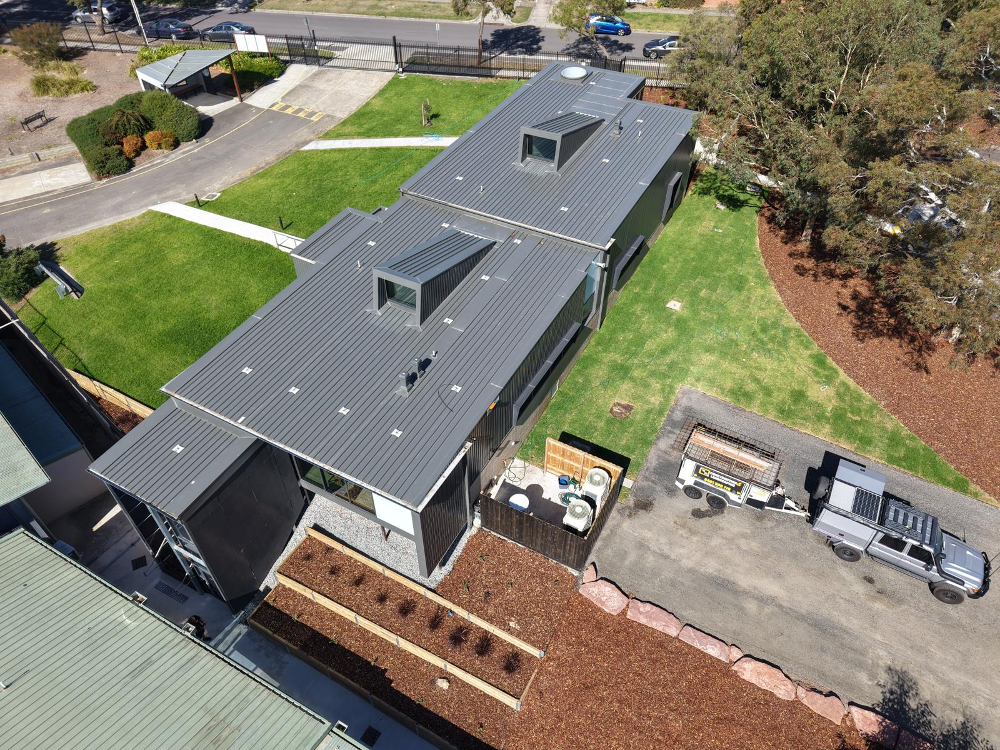

Site safety & WHS
Fenced compounds, traffic management plans and SWMS documentation. Working alongside active classrooms, public users and live commercial operations.
Commercial · Camberwell
Schools, childcare and body-corporate grounds across the Camberwell area, delivered around live operations and public access without disrupting the people who use the site.
One in-house team from first consultation to final handover. Not three trades stitched together at the end.
The brief
Commercial landscape construction is rarely just about the landscape. School grounds work runs through term breaks while classrooms operate next door. Public realm and childcare sites carry safety, compliance and stakeholder demands that a residential job never sees.
ANKS is built for this. We run programmes against fixed completion dates, coordinate with principals, business managers and project consultants, and deliver the external works package safely on active and sensitive sites.

Scope

Fenced compounds, traffic management plans and SWMS documentation. Working alongside active classrooms, public users and live commercial operations.

Bulk and detail excavation, drainage, sub-base, paving, kerbs and driveways. The infrastructure that carries the finished landscape.

Sandstone, boulder, timber and concrete retaining. Tiered beds, embankments and structural elements that shape graded sites.

Shade trees, hedging, garden beds, ground cover and turf. Planting selected for the way it establishes in commercial settings.

Shade sails, fencing, signage, bollards, edging and finishing details. The final layer that brings the commercial site into use.

Milestones tracked to the day, defects and snag resolution before handover, and warranty documentation aligned with consultant requirements.
Who we work with
For schools & education
Grounds and external works staged around term dates and daily operations, with the documentation and site controls that education projects require. Safe delivery alongside a live campus.
For councils & public realm
Streetscape, park and public-space construction delivered with the public still using the space. Programme, safety and finish held to the standard the brief was written to.
For commercial developers
The external works package on childcare, medium-density and mixed-use sites, run against your programme with a single point of accountability from earthworks to establishment.
Where we work
Camberwell sits at the centre of our core service area. We deliver across the surrounding eastern suburbs where architect and builder-led homes are most concentrated.
Camberwell and nearby
Part of our core eastern and south-eastern service area. See the full picture of how we work.
Common questions
Yes. Many Camberwell blocks carry heritage overlays and significant established trees. We plan levels, access and structure around tree-protection zones and overlay requirements, and coordinate with your arborist and consultants so the landscape is delivered without compromising protected features.
Yes. Commercial work takes us across metropolitan Melbourne, and we deliver school, childcare, public-realm and medium-density external works in and around Camberwell and the surrounding suburbs.
Yes. We run fenced compounds, traffic management plans and SWMS documentation, and stage the works around term dates, school hours and public access so the site stays safe while it stays open.
One in-house team, from earthworks through to planting and finishing. A single line of accountability against your programme, not a chain of subcontractors handing off between trades.